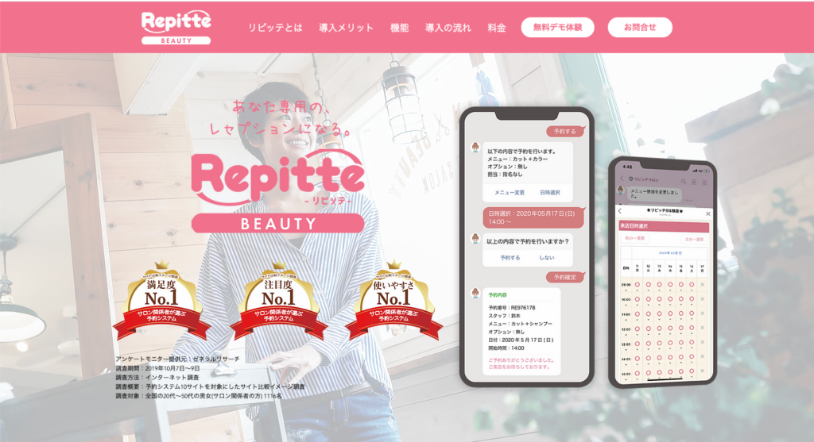
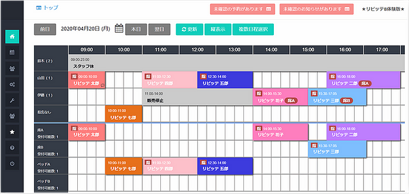
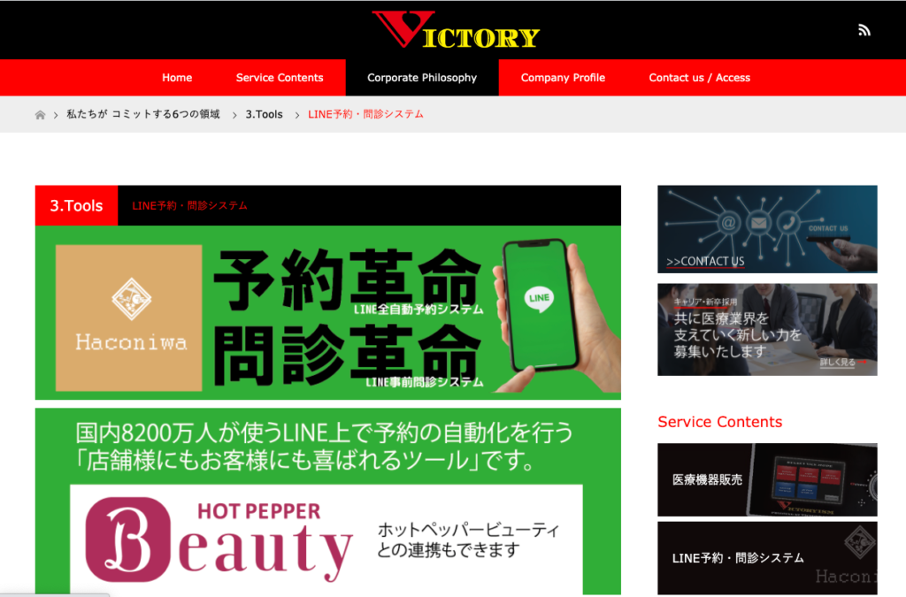
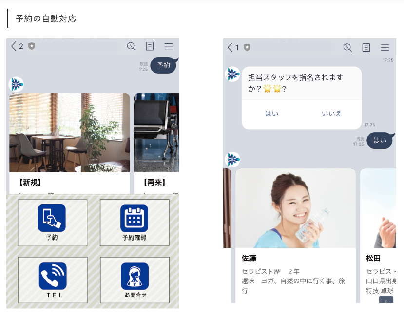
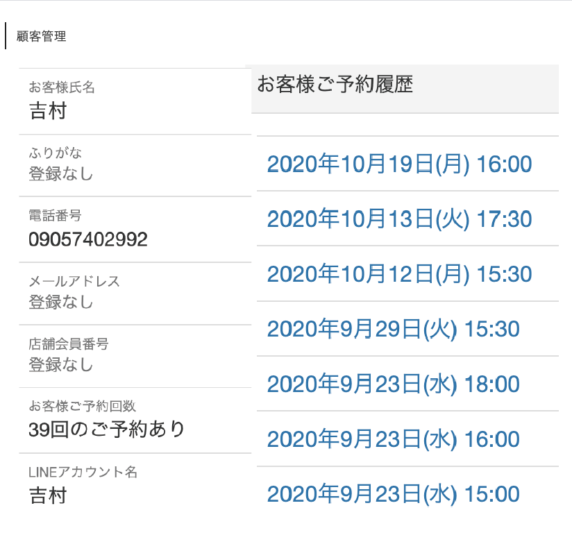

#027_予約システムの続き
こんにちは！今日は前回に引き続き、便利な予約システムについて解説していきます。今回は『LINE内で予約・キャンセルができる！』というシステムになります。
（１）リピッテ
こちらは、サロンや美容師・ネイリスト・エステティシャンなど、美容系に特化した予約システム「リピッテ」です。美容に特化しているので、HOT PEPPER Beautyと連携できるようになっています。

もちろんLINE公式アカウントとも連携できます。LINEから入った予約内容などの顧客情報を管理するだけでなく、ご来店時にあらためてお客様情報を登録していただくと、そのお客様に合わせた内容のメッセージ配信（セグメント配信）をすることができ、来店前日のリマインドメッセージまで送ることができます。

予約管理画面は、このようにとてもわかりやすいので、パソコンやデジタルに苦手意識を持っている人も安心！複数のサイトからの予約も一括管理できるので、サロン運営者にとってはとても助かる予約ツールです。
費用については、初期費用9,800円＋（個人事業主やフリーランスであれば）2,000円／月で利用することができます！（店舗利用では、予約サイト連携・リマインド配信と便利な機能を追加すると、14,000円/月になります。とはいえ、他社と比較しても機能・金額とも一般的な価格です。）
他にも、無料オプションでチラシやPOPを作成してくれたり、HP制作やEC通販なども相談に乗ってもらえますので、開業したてのサロンやクリニックにぜひオススメしたい予約システムです。
（２）Haconiwa
最後に、僕のイチオシがHaconiwa（ハコニワ）です。

リピッテ同様、LINEさえ使っていれば誰でも予約できるというハードルの低さが１番のポイントです。もちろんHOT PEPPER Beautyとも連携できます。髪を切ったり、エステにいくたびHOT PEPPER Beautyを開いている女性も多いですから、先週紹介したシステムと比較するとすごいメリットですね！

Haconiwaの予約画面は、シンプルでわかりやすい設計。途中で操作方法がわからなくなっても、すぐ電話問い合わせに切り替えることができるので、お客様のとりこぼしを防げます。
チャット予約では施術スタッフの指名も可能！Haconiwaにはスタッフの勤怠管理機能もついているので、確実にご指名のスタッフが勤務している日に予約を取ることができるのです。これなら、お客様に安心して予約してもらえるし、信頼感を得ることができますね！

また、顧客情報管理やアラートメッセージの自動配信が出来るだけでなく、お客様側も自分の予約履歴を確認・キャンセルなど出来る点も、リピーターをゲットする上で重要なメリットです。
初期費用は、49,800円かかります。これには理由があり、なんと個々の店舗の状況に合わせてシステムをイチから構築してくれるのです！ パソコンが苦手でシステムを使いこなす自信がない方でも安心しておまかせでき、タブレットやスマホからも管理できます。
しかも、予約サイト連携・リマインド配信等もできて、月額9,800円！リピッテと比べて初期費用は高めですが、毎月の費用が安いです。 機能もほぼ同じで、10ヵ月利用すればこちらの方がお安くなりますので、サポート・料金をあわせて考えると僕はHaconiwaをオススメします！
まずはLINE公式アカウントを開設しましょう！
●LINE公式アカウントの開設方法はこちら
●LINE公式アカウントをオススメする理由はこち
●LINE公式アカウントでできることはこちら
●Lステップでできることはこちら